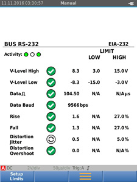
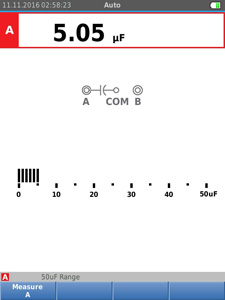

|
|
|
Simplifican las pruebas y facilitan la resolución de
problemas electromecánicos El ScopeMeter® compacto de la serie 120B es una solución sólida de osciloscopios para la solución de problemas y el mantenimiento de aplicaciones de equipos eléctricos y electromecánicos. Es una herramienta de prueba integrada, con osciloscopio, multímetro y grabador de alta velocidad en un instrumento fácil de usar. El ScopeMeter de la serie 120B también se integra con la aplicación móvil Fluke Connect® y el software FlukeView® para ScopeMeter con el fin de permitir mayor colaboración, análisis de datos y archivado de información de pruebas fundamentales.  
|
Las herramientas de prueba ScopeMeter industriales de la serie 120B incluyen funciones innovadoras diseñadas para ayudar a los técnicos a solucionar problemas con mayor rapidez y a obtener las respuestas que necesitan para mantener sus sistemas actualizados y en funcionamiento. Utilice esta herramienta para ver formas de onda con la tecnología de disparo y configuración Connect-and-View™, y visualizar automáticamente las mediciones numéricas relacionadas utilizando la tecnología Fluke IntellaSet™, sin necesidad de realizar ajustes de medición manuales. Con la función Detectar y registrar eventos puede captar actividades intermitentes y difíciles de detectar y registrarlas para una visualización y un análisis más sencillos.- Osciloscopio y multímetro digital de doble entrada
- Ancho de banda del osciloscopio de 40 MHz o 20 MHz
- Dos multímetros digitales de verdadero valor eficaz con 5000 cuentas
- Función de disparo Connect-and-View™ para el disparo sin intervención del usuario
- Tecnología IntellaSet™ que ajusta de forma automática e inteligente la lectura numérica basada en la señal medida
- Doble entrada de forma de onda y registro de lectura del medidor que registra los datos de tendencias en periodos prolongados de tiempo
- Detector y registrador de eventos capta las señales intermitentes e imprecisas de las formas de onda repetitivas de hasta 4 kHz
- Cables de prueba blindados para las mediciones del osciloscopio, resistencia y continuidad
- Medidor de resistencia, continuidad, diodo y capacitancia
- Mediciones de potencia (W, VA, VAR, PF, DPF, Hz)
- Armónicos de tensión, corriente y potencia
- Control de las redes industriales con pruebas de capa física del Estado del bus contra los niveles de referencia definidos
- Guardar o recuperar datos y configuraciones del instrumento
- Almacenamiento de configuraciones del instrumento por una secuencia de prueba para mantenimiento de rutina o procedimientos de prueba utilizados con más frecuencia.
- Interfaz USB externa aislada de manera óptica para transferir, archivar y analizar los datos del osciloscopio o del instrumento medidor
- Adaptador WiFi opcional conectado al puerto USB interno para transferencia inalámbrica de la información a la PC, a la computadora portátil o a la aplicación móvil Fluke Connect®*
- Software FlukeView® ScopeMeter para Windows®
- Diseño resistente para soportar 3 g de vibración, 30 g de descargas y clasificado como IP51 según la norma EN/IEC60529
- Mejor calificación de seguridad en la industria: calificación de seguridad para CAT IV 600 V
- Batería de iones de litio recargable y siete horas de
funcionamiento (con un tiempo de carga de cuatro horas)
*No todos los modelos se encuentran disponibles en todos los países. Consulte con su representante local de Fluke. | | Función de disparo Connect-and-View™, para obtener al instante una visualización estable | Los usuarios de osciloscopios saben cuán difícil puede ser el disparo. Utilizar los ajustes incorrectos puede conducir a la captura de formas de onda inestables y, a veces, proporcionar datos de medición incorrectos. La tecnología exclusiva de disparo Connect-and-View™ de Fluke reconoce patrones de señal y configura automáticamente el disparo correcto para proporcionar muestras estables, fiables y repetibles. La tecnología de disparo Connect-and-View™ está diseñada para funcionar con casi cualquier señal, incluidas las señales de los impulsores de motor y control de señales, y sin necesidad de ajustar los parámetros o de tocar un botón. Los cambios de señal se reconocen al instante y las configuraciones se ajustan de manera automática para ofrecer una visualización estable incluso cuando se miden varios puntos de prueba en sucesión rápida. IntellaSet™/Lectura automática La función de lectura automática con tecnología IntellaSet™ de Fluke utiliza algoritmos patentados para analizar de manera inteligente la medición de la forma de onda y muestra automáticamente las mediciones numéricas más adecuadas en la pantalla para que pueda obtener los datos que necesita de la forma más simple. Como ejemplo, cuando la medida de la forma de onda es una señal de tensión de línea, se muestran de manera automática las lecturas de Vrms y Hz, mientras que si la medida de la forma de onda es una onda cuadrada, se muestran automáticamente las lecturas de Vpico-pico y Hz. Con la tecnología IntellaSet™ y la tecnología de disparo automático Connect-and-View™ puede estar seguro de que verá no solo la forma de onda correcta, sino también la lectura numérica adecuada. Todo esto sin tocar ni un botón. | 
La tecnología de disparo Connect-and-View™ junto con IntellaSet™ de Fluke le proporciona una acceso rápido a los datos que necesita. | Los equipos industriales necesitan un suministro fiable de energía para funcionar correctamente, use la entrada doble para obtener mediciones de potencia claves. | | En sistemas monofásicos o trifásicos equilibrados, las entradas dobles de la serie industrial 120B de ScopeMeter® pueden medir el valor eficaz verdadero de tensión de CA+CC en el canal A y el valor eficaz verdadero de la corriente de CA+CC en el canal B. Además, el modelo Fluke 125B puede calcular la frecuencia, el ángulo de fase, la potencia activa (kW), la potencia reactiva (VA o VAR), el factor de potencia (PF) o el factor de potencia de desplazamiento (DPF) y también puede calcular los valores de potencia de un sistema trifásico donde todas las fases tienen la misma tensión y la misma corriente. Esto se aplica tanto a sistemas equilibrados como a cargas resistivas. |  | Podrá obtener fácilmente las características de energía clave para validar un sistema de potencia. | | Mediciones de armónicas | | Los armónicas son distorsiones periódicas de tensión, corriente u ondas senoidales de potencia. Las cargas no lineales, como las fuentes de alimentación de CC en modo conmutado y los impulsores de motor de velocidad ajustable, suelen causar armónicas en los sistemas de distribución de energía. Los armónicas pueden provocar que los transformadores, conductores y motores se recalienten. En la función Harmonics, la Herramienta de prueba mide armónicas hasta el nivel 51. Los datos relacionados, como los componentes de CC, la distorsión armónica total (THD) y el factor K, se miden para proporcionar una visión completa del estado eléctrico de sus cargas. |  | Descripción del espectro de armónicas con cursores para medir la distorsión como porcentaje del fundamental. | Utilice los modos de registro integral para encontrar fallos intermitentes con facilidad | | Los fallos más difíciles de localizar son aquellos que sólo ocurren de vez en cuando: es decir, eventos intermitentes. Pueden deberse a conexiones defectuosas, al polvo, la suciedad, la corrosión o, simplemente, a conectores o cables rotos. Otros factores, como las interrupciones de línea y las caídas de tensión o el arranque y la detención de un motor, también pueden provocar eventos intermitentes y paradas de los equipos. Cuando estos eventos ocurran, es posible que no esté presente para verlos. Pero su herramienta de comprobación Fluke ScopeMeter® sí lo hará. Puede trazar los valores de medición de los picos máximo y mínimo o registrar la marca de la forma de onda. Y con una memoria expandible micro SD, la grabación de sesiones puede hacerse hasta por 14 días. Este registro es incluso más eficaz con un Detector y registrador de eventos, que hace que la detección de fallos intermitentes y su registro sea más fácil que nunca. Solo tiene que establecer un umbral de lectura o trazo del osciloscopio y las desviaciones se etiquetan como eventos únicos. Ya no necesita buscar a través de masas de datos para localizar los fallos y puede pasar rápidamente de un evento etiquetado al siguiente, mientras sigue teniendo acceso a la totalidad del conjunto de datos. |  | Pasa rápidamente a través de los eventos registrados para identificar y solucionar fallos intermitentes. | Las pruebas de Estado del bus industrial verifican la calidad de la señal eléctrica de los buses industriales | | La prueba de Estado del bus analiza las señales eléctricas en el bus o en la red industrial y proporciona una indicación clara de "bueno", "deficiente" o "malo" para cada uno de los parámetros pertinentes, que se presentan al lado del valor real de la medición. Los valores medidos se comparan con los valores estándares basados en los tipos de bus seleccionados (CAN-bus, Profi-bus, Foundation Field, RS-232 y muchos más) o se pueden establecer valores de referencia únicos si se requieren tolerancias diferentes. El modelo Fluke 125B puede validar la calidad de las señales eléctricas en el momento en que pasan a través de la red, sin mirar el contenido de los datos. Además, el modelo 125B comprueba los niveles de señal y la velocidad, los tiempos de transición y la distorsión, y los compara con los estándares adecuados para ayudarle a encontrar errores, como conexiones de cable inadecuadas, contactos malos, descarga a tierra incorrecta o terminales erróneos. |  | El bus industrial de práctica comprende rápidamente las características de la capa física de la señal analógica. | Un cable de prueba para medir varios parámetros eléctricos | | Las mediciones de forma de onda de alta frecuencia, medidor, capacitancia y resistencia, además de los controles de continuidad, están cubiertos por un solo conjunto de cables de prueba blindados. No se pierde tiempo en buscar o intercambiar cables. |  | Una sola herramienta de prueba mide voltios, ohmios, amperios o capacitancia, además de mostrar formas de onda. | | | Software FlukeView® ScopeMeter para Windows® | Aproveche mejor el modelo ScopeMeter 120B con el software FlukeView®: - Guarde copias en color de las pantallas del instrumento en el PC
- Copie imágenes de pantallas en informes y documentación
- Capture y almacene datos de formas de onda desde la herramienta de prueba ScopeMeter en el PC
- Cree y archive referencias de forma de onda para una fácil comparación
- Copie datos de formas de onda en hojas de cálculo para un análisis más detallado
- Utilice los cursores para medir los parámetros
- Agregue texto del usuario a las configuraciones del instrumento y envíelo al instrumento para que el operador lo utilice como referencia e instrucciones
Nota: algunas funciones pueden estar disponibles solo con modelos de la herramienta de prueba ScopeMeter específicos Compatible con la aplicación móvil Fluke Connect En la maquinaria industrial automatizada es más difícil que nunca solucionar los problemas. No es suficiente con saber dónde hay que realizar una prueba, también hay que saber qué buscar, y esto puede ser difícil sin datos de medición de referencia o el acceso a expertos en la materia. El sistema inalámbrico de Activos de Fluke Connect® de software y las herramientas de prueba inalámbricas permiten a los técnicos reducir los costos de mantenimiento y aumentar el tiempo de actividad con registros de equipo exactos y mantenimiento de datos que son fáciles de interpretar y compartir. Compara y contrasta la medición de datos del punto de prueba y las tendencias para poder comprender mejor las características de señal y los cambios con el paso del tiempo. Y con el almacenamiento de los datos de mantenimiento en Fluke Cloud™ puede permitirle a los miembros del equipo el acceso a ellos desde cualquier lugar y siempre que los necesiten, de modo que puede obtener asesoramiento o aprobaciones en la práctica y lograr que sus sistemas estén configurados y funcionen mucho más rápido. | | Gráfico comparativo del producto | Fluke 123B | Fluke 124B | Fluke 125B | | Funciones | | Osciloscopio y medidor con doble entrada y funciones completas | • | • | • | | Ancho de banda del osciloscopio en MHz | ="20" | ="40" | ="40" | | Registrador del medidor y del osciloscopio | • | • | • | | Mediciones del cursor del osciloscopio | | • | • | | Mediciones de potencia y armónicas | | | • | | Estado del bus | | | • | | Accesorios incluidos | | Sonda de tensión 10:1 | | • | • | | Pinza amperimétrica i400s para CA | | | • |
|
|
| Modo de osciloscopio | | Vertical | | Respuesta de frecuencia: acoplamiento de CC | Sin sondas y cables de prueba (con BB120) | 123B: CC a 20 MHz (-3 dB)
124B y 125B: CC a 40 MHz (-3 dB) | | Con STL120-IV 1:1 cables de prueba blindados | CC a 12,5 MHz (-3 dB)/CC a 20 MHz (-6 dB) | | Con sonda VP41 10:1 | 123B: CC a 20MHz (-3 dB)
124B y 125B: CC a 40 MHz (-3 dB) | | Respuesta de frecuencia: acoplamiento de CA (si hay reducción gradual) | Sin sondas y cables de prueba | <10 Hz (-3 dB) | | Con STL120-IV 1:1 cables de prueba blindados | <10 Hz (-3 dB) | | Con sonda VP41 10:1 | <10 Hz (-3 dB) | Tiempo de elevación, excluidas las sondas y los
cables de prueba | 123B <17,5 ns
124B y 125B <8,75 ns | | Impedancia de entrada | Sin sondas y cables de prueba | 1 MΩ//20 pF | | Con BB120 | 1 MΩ//24 pF | | Con STL120-IV 1:1 cables de prueba blindados | 1 MΩ//230 pF | | Con sonda VP41 10:1 | 5 MΩ//15,5 pF | | Sensibilidad | 5 mV a 200 V/div | | Limitador de ancho de banda analógico | 10 kHz | | Modos de visualización | A, -A, B, -B | | Voltaje de entrada máx. A y B | Directo, con los cables de prueba o con sonda VP41 | 600 Vrms CAT IV, tensión máxima de 750 Vrms. | | Con BB120 | 600 Vrms | | Voltaje máx. flotante, desde cualquier terminal a la descarga a tierra | 600 Vrms CAT IV, 750 Vrms hasta 400 Hz | | Horizontal | | Modos de osciloscopio | Normal, simple, visualización inmediata | Rangos (normal)
| Muestreo equivalente | 123B: 20 ns a 500 ns/div, | | 124B y 125B: 10 ns hasta 500 ns/div | | Muestreo en tiempo real | 1 μs a 5 s/div | | Único (tiempo real) | 1 μs a 5 s/div | | Visualización instantánea (tiempo real) | 1 s a 60 s/div | | Tasa de muestreo (para ambos canales en simultáneo) | Muestreo equivalente (señales repetitivas) | Hasta 4 GS/s | | Muestreo en tiempo real 1 μs a 60 s/div | 40 MS/s |
| Disparo | | Actualización de la pantalla | Modo libre, al disparo | | Fuente | A, B | | Sensibilidad A y B | a CC a 5 MHz | 0,5 divisiones o 5 mV | | a 40 MHz | 123B: 4 divisiones | | 124B y 125B: 1,5 divisiones | | a 60 MHz | 123B: N/A | | 124B y 125B: 4 divisiones | | Pendiente | Positivo, negativo |
| Funciones de osciloscopio avanzadas | | Modos de visualización | Normal | Captura fallos de hasta 25 ns y muestra la persistencia de forma de onda tipo analógica | | Suavizar | Suprime el ruido de una forma de onda | | Fallas desactivadas | No captura fallas entre muestras | | recubrimiento | Registra y muestra el mínimo y el máximo de formas de onda con el tiempo | | Autoajuste (Connect-and-View™) | Ajustes automáticos continuos completos de la amplitud, la base de tiempo, los niveles de disparo, la brecha de disparo y la demora. Anulación manual por el usuario del ajuste de amplitud, de la base de tiempo o del nivel de disparo. |
| Medidor de entrada doble | | La exactitud de todas las mediciones se encuentra dentro de ± (% de lectura + número de unidades) de 18 °C a 28 °C. | | Agregue 0,1 cada vez (exactitud específica) por cada °C por debajo de 18 °C o superior a 28 °C. En las mediciones de tensión con sonda 10:1, sume +1 % de incertidumbre de la sonda. Más de un período de forma de onda debe ser visible en la pantalla. |
| Entrada A y entrada B | | Voltaje de CC (V CC) | | Rangos | 500 mV, 5 V, 50 V, 500 V, 750 V | | Exactitud | ± (0,5 % + 5 unidades) | | Rechazo de modo común (CMRR) | >100 dB a CC, >60 dB a 50, 60 o 400 Hz | | Lectura de fondo de escala | 5.000 unidades | | Valor eficaz verdadero de voltaje (V CA y V CA+CC) | | Rangos | 500 mV, 5 V, 50 V, 500 V, 750 V | | Exactitud de 5% a 100% del rango (acoplamiento de CC) | CC a 60 Hz (V CA+CC) | ± (1 % + 10 unidades) | | 1 Hz a 60 Hz (V CA) | ± (1 % + 10 unidades) | | Exactitud de 5 % a 100 % del rango (acoplamiento de CA o CC) | 60 Hz a 20 kHz | ± (2,5 % + 15 unidades) | | Rechazo de CC (solo V CA) | >50 dB | Rechazo de modo común (CMRR)
| >100 dB a CC | | >60 dB a 50, 60 o 400 Hz | | Lectura de fondo de escala | 5000 unidades, la lectura es independiente de cualquier factor de cresta de la señal. | | Pico | | Modos | Pico máximo, Pico mínimo o Pico a pico | | Rangos | 500 mV, 5 V, 50 V, 500 V, 2200 V | | Exactitud | Exactitud Pico máx. o mín. | 5 % de escala real | | Exactitud de pico a pico | 10% de escala real | | Lectura de fondo de escala | 500 unidades | | Frecuencia (Hz) | | Rangos | 123B: 1 Hz, 10 Hz, 100 Hz, 1 kHz, 10 kHz, 100 kHz, 1 MHz, 10 MHz y 50 MHz | | 124B y 125B: 1 Hz, 10 Hz, 100 Hz, 1 kHz, 10 kHz, 100 kHz, 1 MHz, 10 MHz y 70 MHz | | Rango de frecuencia | 15 Hz (1 Hz) a 50 MHz en autoajuste continuo | | Exactitud de 1 Hz a 1 MHz | ± (0,5 % + 2 unidades) | | Lectura de fondo de escala | 10.000 unidades | | RPM | | Lectura máx. | 50,00 kRPM | | Exactitud | ± (0,5 % + 2 unidades) | | Ciclo de trabajo (PULSO) | | Rango | 2% a 98% | | Rango de frecuencia | 15 Hz (1 Hz) a 30 MHz en autoajuste continuo | | Ancho de pulso (PULSE) | | Rango de frecuencia | 15 Hz (1 Hz) a 30 MHz en autoajuste continuo | | Lectura de fondo de escala | 1000 unidades | | Amperios (AMP) | | Con abrazadera de corriente | Rangos | Igual que V CC, V CA, V CA+CA o PICO | | Factores de escala | 0,1 mV/A, 1 mV/A, 10 mV/A, 100 mV/A, 400 mV/A, 1 V/A, 10 mV/mA | | Exactitud | Igual que V CC, V CA, V CA+CC o PICO
(sumar la incertidumbre de la pinza amperimétrica) | | Temperatura (TEMP) con sonda de temperatura opcional | | Rango | 200 °C/div (200 °F/div) | | Factor de escala | 1 mV/°C y 1 mV/°F | | Exactitud | Como V CC (sumar incertidumbre de la sonda de temp.) | | Decibelios (dB) | | 0 dBV | 1 V | | 0 dBm (600 Ω/50 Ω) | Referencia de 1 mW a 600 Ω o 50 Ω | | dB en | V CC, V CA o V CA+CC | | Lectura de fondo de escala | 1000 unidades | | Factor de cresta (CREST) | | Rango | 1 a 10 | | Lectura de fondo de escala | 90 unidades | | Fase | | Modos | A a B, B a A | | Rango | De 0 a 359 grados | | Resolución | 1 grado | | Energía (solo 125B) | | Configuraciones | Cargas de 3 conductores equilibradas monofásicas/trifásicas (trifásica: solo componente fundamental, solo en el modo AUTOSET) | | Factor de potencia (PF) | Relación entre vatios y rango de VA: 0,00 a 1,00 | | Vatios | Lectura de valor eficaz verdadero correspondiente a la multiplicación de las muestras de entrada A (voltios) y entrada B (amperios) | | Lectura de fondo de escala | 999 unidades | | VA | Vrms x Arms | | Lectura de fondo de escala | 999 unidades | | VA reactivos (VAR) | [S][208]="2"[S][210]="2"[S][212] | | Lectura de fondo de escala | 999 unidades | | Vpwm | | Finalidad | Medir las señales moduladas por ancho de pulso, como las salidas del inversor del impulsor del motor | | Principio | Las lecturas indican la tensión eficaz basada en el valor promedio de las muestras en una cantidad de períodos enteros de la frecuencia fundamental | | Exactitud | Como Vrms para señales de onda senoidal |
| Entrada A a común | | Ohmios (Ω) | | Rangos | 123B y 124B | 500 Ω, 5 kΩ, 50 kΩ, 500 kΩ, 5 MΩ, 30 MΩ | | 125B | 50 Ω, 500 kΩ, 5 kΩ, 50 kΩ, 500 MΩ, 5 MΩ, 30 MΩ | | Exactitud | ± (0,6 % + 5 unidades) 50 Ω ± (2 % + 20 unidades) | | Lectura de fondo de escala | 50 Ω a 5 MΩ - 5000 unidades, 30 MΩ - 3000 unidades | | Medida de corriente | 0,5 mA a 50 nA, disminuye con el aumento de los rangos | | Tensión del circuito abierto | <4 V | | Continuidad (Cont) | | Pitido | <(30 Ω ± 5 Ω) en el rango de 50 Ω | | Medida de corriente | 0,5 mA | | Detección de cortos de | ≥1 ms | | Diodo | | Medición de voltaje | a 0,5 mA | >2,8 V | | A circuito abierto | <4 V | | Medida de corriente | 0,5 mA | | Polaridad | + en la entrada A, - en COM | | Capacitancia (CAP) | | Rangos | 50 nF, 500 nF, 5 μF, 50 μF, 500 μF | | Lectura de fondo de escala | 5.000 unidades | | Medida de corriente | 500 nA a 0,5 mA, aumenta con el aumento de los rangos |
| Funciones avanzadas del multímetro | | Ajuste a cero | Establecer el valor real como referencia | | Autorretención (en A) | Captura y congela un resultado de medición estable. Emite un pitido cuando es estable. AutoHold funciona en la lectura del medidor principal, con umbrales de 1 Vpp para señales de CA y 100 mV para señales de CC. | | Separador decimal fijo | Activado mediante teclas de atenuación |
| Lectura del cursor (124B y 125B) | | Fuentes | A, B | | Línea vertical única | Promedio, lectura mín. y máx. | | Promedio, mín., máx. y de tiempo desde el inicio de la lectura (en modo ROLL; instrumento en HOLD) | | Mín., Máx. y de tiempo desde el inicio de la lectura (en modo RECORDER; instrumento en HOLD) | | Valores armónicos en el modo POWER QUALITY (CALIDAD DE ENERGÍA). | | Líneas verticales dobles | Lectura de pico a pico, tiempo a distancia y tiempo recíproco a distancia | | Lectura de promedio, mín., máx. y tiempo a distancia (en modo ROLL; instrumento en HOLD) | | Dos líneas horizontales | Lectura alta, baja y pico a pico | | Tiempo de aumento o disminución | Lectura de tiempo de transición, nivel 0 % y nivel 100 % (nivelación manual o automática; la nivelación automática sólo
es posible en el modo de canal único) | | Exactitud | Según la exactitud del osciloscopio |
| Registrador | | El registrador captura lecturas en modo Meter Recorder o muestras de formas de onda de manera continua en el modo Scope Recorder. La información se almacena en la memoria interna o en una tarjeta SD opcional (con los modelos 125B o 124B). | | Los resultados se muestran como una pantalla de Gráfico de registro que marca un gráfico de valores mínimos y máximos de las mediciones del medidor en un lapso de tiempo o como una pantalla de registro de la forma de onda que marca todas las muestras capturadas. | | Lecturas del instrumento | | Velocidad de medición | Máximo de 2 mediciones | | Tamaño del registro (mínimo, máximo, promedio) | 2 M lecturas para 1 canal | | Intervalo de registro | 2 semanas | | Número máximo de eventos | ="1024" | | Registro de forma de onda | | Velocidad de muestreo máxima | 400 K muestra/s | | Tamaño de la memoria interna | Tiempo registrado de 400 M muestras | | Amplitud de la memoria interna | 15 minutos a 500 μs/div
11 horas a 20 ms/div | | Tamaño de registro de la tarjeta SD | 1,5 G muestras | | Amplitud de tiempo de registro de la tarjeta SD | 11 horas a 500 μs/div
14 días a 20 ms/div | | Número máximo de eventos | ="64" |
| Calidad de potencia (solo 125B) | | Lecturas | Vatios, VA, var, PF, DPF, Hz | | Vatios, VA, rangos de var (automático) | 250 V a 250 MV; 625 MV; 1,56 GV | | Cuando está seleccionado: total (% r) | ± (2 % + 6 unidades) | | Cuando está seleccionado: fundamental (% f) | ± (4 % + 4 unidades) | | DPF | 0,00 a 1,00 | | FP | 0,00 a 1,00; ± 0,04 | | Rango de frecuencia | 10,0 Hz a 15,0 kHz
40,0 Hz a 70,0 Hz | | Cantidad de armónicas | CC a 51 | Lecturas/lecturas de cursor
(fundamental de 40 Hz a 70 Hz) | Vrms / Arms / Vatio | Cada una de las armónicas del fundamental puede seleccionarse para lecturas individuales | | Incluye frecuencia de fundamental, ángulo de fase y factor K (en amperios y vatios) |
| Probador de Estado del bus (solo modelo Fluke 125B) | | Tipo | Subtipo | Protocolo | | AS-i | NEN-EN50295 | | CAN | ISO-11898 | | Interbus S | RS-422 | EIA-422 | | Modbus | RS-232 | RS-232/EIA-232 | | RS-485 | RS-485/EIA-485 | | Foundation Fieldbus | H1 | 61158 tipo 1; 31,25 kBit | | Profibus | PR | EIA-485 | | PA | 61158 tipo 1 |
| Equipos varios | | Pantalla | Tipo | 5,7 pulgadas en color de matriz activa TFT | | Resolución | 640 x 480 píxeles | | Presentación de forma de onda | Vertical | 10 div. de 40 píxeles | | Horizontal | 12 div. de 40 píxeles | | Alimentación | Externa | A través del adaptador de alimentación BC430 | | Tensión de entrada | 10 V CC a 21 V CC | | Consumo de energía | 5 V típico | | Conector de entrada | Conector de 5 mm | | Interna | A través del paquete de batería BP290 | | Autonomía de la batería | Batería recargable de ión de litio de 10,8 V | | Tiempo de funcionamiento | 7 horas con 50 % de brillo de la luz de fondo | | Tiempo de carga | 4 horas con la herramienta de prueba apagada, 7 horas con la herramienta de prueba encendida | | Temperatura ambiente permitida | De 0 °C a 40 °C (32 °F a 104 °F) durante el proceso de carga | | Memoria | La memoria interna puede almacenar 20 conjuntos de datos (pantalla de forma de onda y configuración) | Ranura para tarjeta micro SD con tarjeta SD opcional (tamaño máximo de 32 GB) | | Características mecánicas | Dimensiones | 259 x 132 x 55 mm
(10,2 x 5,2 x 2,15 pulg.) | | Peso | 1,4 kg (3,2 libras), incluida la batería | | Interfaz | Ópticamente aislado | Transferencia de copias de pantallas (mapas de bits), ajustes y datos | | USB a PC/computadora portátil | Adaptador/cable USB OC4USB aislado de manera óptica (opcional), con el software FlukeView® para Windows®. | | Adaptador WiFi opcional | Transferencia rápida de copias de pantalla (mapas de bits), configuración y datos a PC/portátil, tableta, teléfono inteligente, etc. Su proporciona un puerto USB para conectar una llave WiFi. No utilice el puerto USB con un cable por razones de seguridad. |
| Medioambientales | | Medioambientales | MIL-PRF-28800F, Clase 2 | | Temperatura | Funcionamiento con batería | 0 a 40 °C (32 a 104 °F) | | Funcionamiento con adaptador de alimentación | 0 a 50 °C (32 a 122 °F) | | Almacenamiento | -20 a 60 °C (-4 a 140 °F) | | Humedad (funcionamiento) | De 0 a 10 °C (32 a 50 °F) | Sin condensación | | De 10 a 30 °C (50 a 86 °F) | 95% | | De 30 a 40 °C (86 a 104 °F) | 75% | | De 40 a 50 °C (104 a 122 °F) | 45% | | Almacenamiento | De -20 a 60 °C (-4 a 140 °F) | Sin condensación | | Altitud | Funcionamiento a 3 km (10.000 pies) | CAT III 600 V | | Funcionamiento a 2 km (6.600 pies) | CAT IV 600 V | | Almacenamiento | 12 km | | Compatibilidad electromagnética EMC | Internacional | IEC 61326-1: Industrial, CISPR 11: grupo 1, clase A | | Corea (KCC) | Equipo de Clase A (equipo de comunicación y difusión industrial) | | EE.UU. (FCC) | 47 CFR 15 subsección B. Este producto se considera un dispositivo exento según la cláusula 15.103. | | Radio inalámbrica con adaptador | Rango de frecuencia | 2412 MHz a 2462 MHz | | Potencia de salida | <100 mV | | Protección del embalaje | IP51, ref: EN/IEC60529 | | Seguridad | General | IEC 61010-1: Grado de contaminación 2 | | Medida | IEC 61010-2-033: CAT IV 600 V/CAT III 750 V | | Voltaje de entrada máx. en entradas A y B | Continuo a la entrada o con cables | 600 Vrms CAT IV para disminución de capacidad | | Con adaptador BB120 banana a BNC | 600 Vrms para disminución de capacidad | | Voltaje máx. flotante desde cualquier terminal a la descarga a tierra | 600 Vrms CAT IV, 750 Vrms hasta 400 Hz |
|
| Nombre del modelo | Descripción | Listas de precios | | Fluke 125B | El Osciloscopio portátil industrial ScopeMeter® (40 MHz)
incluye: - Osciloscopio portátil Fluke 125B
- Cables de prueba blindados con cables de puesta a tierra negros
- Cable de prueba negro (para puesta a tierra)
- Pinzas tipo gancho (roja, azul)
- Adaptadores tipo banana a BNC (negro, x1)
- Sonda de tensión 10:1
- Pinza amperimétrica i400s para CA
- Adaptador angular USB
- Adaptador USB para WiFi*
- Sistema de alimentación de modo Interruptor, cargador para adaptador/batería
- Paquete de baterías de litio recargables
| | Fluke 125B/S | El Osciloscopio portátil industrial ScopeMeter® (40 MHz)
incluye:- Osciloscopio portátil Fluke 125B
- Cables de prueba blindados con cables de puesta a tierra negros
- Cable de prueba negro (para puesta a tierra)
- Pinzas tipo gancho (roja, azul)
- Adaptadores tipo banana a BNC (negro, x1)
- Sonda de tensión 10:1
- Pinza amperimétrica i400s para CA
- Adaptador angular USB
- Adaptador USB para WiFi*
- Sistema de alimentación de modo Interruptor, cargador para adaptador/batería
- Paquete de baterías de litio recargables
- Estuche de transporte flexible
- Correa magnética
- Software FlukeView® ScopeMeter para Windows®
- Protector de pantalla
| | Fluke 124B | El Osciloscopio portátil industrial ScopeMeter® (40 MHz)
incluye:- Osciloscopio portátil Fluke 124B
- Cables de prueba blindados con cables de puesta a tierra negros
- Cable de prueba negro (para puesta a tierra)
- Pinzas tipo gancho (roja, azul)
- Adaptadores tipo banana a BNC (negro, x1)
- Sonda de tensión 10:1
- Adaptador angular USB
- Adaptador USB para WiFi*
- Sistema de alimentación de modo Interruptor, cargador para adaptador/batería
- Paquete de baterías de litio recargables
| | Fluke 124B/S | El Osciloscopio portátil industrial ScopeMeter® (40 MHz)
incluye:- Osciloscopio portátil Fluke 124B
- Cables de prueba blindados con cables de puesta a tierra negros
- Cable de prueba negro (para puesta a tierra)
- Pinzas tipo gancho (roja, azul)
- Adaptadores tipo banana a BNC (negro, x1)
- Sonda de tensión 10:1
- Adaptador angular USB
- Adaptador USB para WiFi*
- Sistema de alimentación de modo Interruptor, cargador para adaptador/batería
- Paquete de baterías de litio recargables
- Estuche de transporte flexible
- Correa magnética
- Software FlukeView® ScopeMeter para Windows®
- Protector de pantalla
| | Fluke 123B | El Osciloscopio portátil industrial ScopeMeter® (20 MHz)
incluye:
- Osciloscopio portátil Fluke 123B
- Cables de prueba blindados con cables de puesta a tierra negros
- Cable de prueba negro (para puesta a tierra)
- Pinzas tipo gancho (roja, azul)
- Adaptadores tipo banana a BNC (negro, x1)
- Adaptador angular USB
- Adaptador USB para WiFi*
- Sistema de alimentación de modo Interruptor, cargador para adaptador/batería
- Paquete de baterías de litio recargables
| | Fluke 123B/S | El Osciloscopio portátil industrial ScopeMeter® (20 MHz)
incluye:
- Osciloscopio portátil Fluke 123B
- Cables de prueba blindados con cables de puesta a tierra negros
- Cable de prueba negro (para puesta a tierra)
- Pinzas tipo gancho (roja, azul)
- Adaptadores tipo banana a BNC (negro, x1)
- Adaptador angular USB
- Adaptador USB para WiFi*
- Sistema de alimentación de modo Interruptor, cargador para adaptador/batería
- Paquete de baterías de litio recargables
- Estuche de transporte flexible
- Correa magnética
- Software FlukeView® ScopeMeter para Windows®
- Protector de pantalla
|
| Sondas Amperimétricas | | 80i-110s | 80i-110s Sonda de corriente AC/DC (100 A) | | i1010 | i1010 Sonda amperimétrica AC/DC | | i200s | i200s Sonda amperimétrica AC | | i410 | i410 Sonda amperimétrica AC/DC | | i3000s | Pinza amperimétrica CA i3000s | | i400s | Pinza amperimétrica CA i400s | | i30 | Pinza amperimétrica CA/CC i30 | | i3000s Flex-24 | Pinza amperimétrica de CA i3000s Flex -24, 610 mm | | i3000s Flex-36 | Pinza amperimétrica de CA i3000s Flex -36, 915 mm | | i5S | Pinza amperimétrica de CA i5S | | i1000s | Sonda de corriente CA i1000s | | i310s | Sonda de corriente i310s |
|
|
|
|